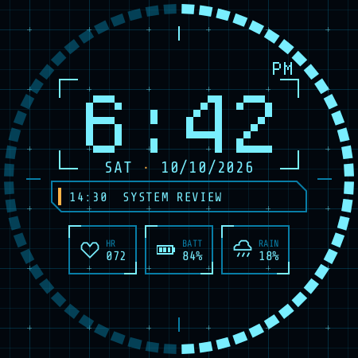

Generated by scripts/generate-production-preview.mjs. Departure Mono 1.500 by Helena Zhang (SIL Open Font License 1.1) is the production clock font. The date, event text and data modules are Share Tech Mono 1.003. All values are sample content.

| Element | Font | Size | Shown |
|---|---|---|---|
| Main clock | Departure Mono Regular | 99 px | 6:42 |
| AM/PM | Departure Mono Regular | 22 px | PM |
| Date | Share Tech Mono Regular | 20 px | SAT · 10/10/2026 |
| Next event | Share Tech Mono Regular | 16 px | 14:30 SYSTEM REVIEW |
| Data values | Share Tech Mono Regular | 16 px | 072, 84%, 18% |
| Data labels | Share Tech Mono Regular | 12 px | HR, BATT, RAIN |
The clock is drawn from the unmodified font outlines at 9× the 11 px design size and AM/PM at 2×, with whole-pixel glyph origins and anti-aliasing off. The date is centred on the face with 11 px clear above its capitals and 11 px below; only its separator dot is amber. Inactive seconds-ring segments are at 48% opacity; elapsed segments are full primary cyan.